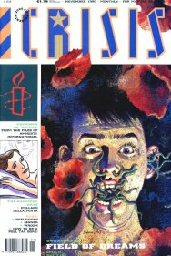
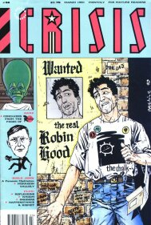
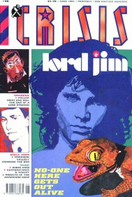
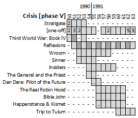

|  |  |  |
| Crisis #52 by Sean Phillips | Crisis #56 by Gary Erskine | Crisis #59 by Steve Sampson |
The fifth phase of Crisis sees the wheels come off in a slow motion disaster. The page count switches from 36pp to 52pp as the magazine goes monthly and finds itself picking up the pieces from a suddenly cancelled nascent Revolver.
Crisis manages to hold on for almost a year after Revolver folds, but it's a troubled time as the signature strip (Third World War) fizzles out having only just started up its Book IV and European art house content is seen as the best thing to (re)print. Like a giraffe, a lot of the content just munches away on the leaves high above the heads of the readership, who anyway have now sunk their eager teeth into the newly launched Judge Dredd - the Megazine (and its entertaining escapism).
For a comic that had such a strong design aesthetic at the beginning, and ran compelling long-form serials, and dared to expose contemporary social injustices, it's a shame that it seems to descend into the rudderless death dive of a faded, jaded, velvet-coated behemoth that's too jazzed up on espresso to realize it's pontificating to an almost empty auditorium.
Straitgate
Erm...maybe what it's like inside the mind of a schizophrenic? Filled with ennui about modern life and relationships, a young man imagines going on violent, bloody murder sprees (perhaps as a way of dealing with his mother's terminal illness).
The shift from political commentary or social justice issues into dark, navel-gazing nihilism plants its flag firmly here. Or is it an artistic treatese on what it's like to live with a severe mental illness?
[The one-off slot(s)]
Selected summaries...
Third World War: Book IV - Ivan's Story
Finn the eco-serial killer rescues Ivan's friend from the (evil) Masons, who move heaven and earth to enact revenge. Meanwhile, Liat and (a revived) Inspector Ryan have a final battle in gloriously disturbing Hicklenton-vision.
Finn/Paul and some of the other characters return (often, it seems, in retellings of some of the same events) in the series Finn, starting in 2000 AD's prog 770 in 1992...
Reflexions
In each one-page piece, one or two images are accompanied by a short text piece, and provide some social commentary. Special mention to the join-the-dots turkey in issue #54.
Wroom
Like Waiting for Godot, except there's only one man, and he's in a room which he can't bring himself to leave. Again, this is either navel-gazing nihilism or an artistic look at severe mental illness. Each episode switches the location (e.g. stairs, watching the news on television), but maintains the ennui.
One episode is a frightening view of male gaze as, presented with a female mannequin, our nowhere man gets more and more frustrated that she won't acknowledge him and swings quickly from curiosity to violent hatred, giving us a glimpse into the psyche of the incel movement.
Sinner: Viet Blues
Mr. Sinner is a hard-boiled private eye working in Manhatten. A key aspect of the story is that he's white and has formed a friendship with a black man (John Smith III), who's suffering from Vietnam PTSD. Societal norms question their friendship.
Insiders
Like Porridge but realistic, as we follow the grim experiences of a new prison inmate, whilst also exploring the violence that sent him here, the violence that he left behind and the violence within the system.
Already very dark, it spirals further as it depicts an impenetrable, long-lasting conspiracy amongst the warders to purposefully harm the prisoners.
The General and the Priest
During the US invasion of Panama, a cross-dressing General (although I think that's a disguise, rather than a proclivity) seeks refuge in the Vatican's embassy. The priest is implicated in crimes involving minors.
Dan Dare: Pilot of the Future
Issue #55 has a text presentation of "extracts from the confidential diaries of Col. Daniel McGregor Dare" that brings us up to speed on the events depicted in Revolver.
The resolution is bitter in that (despite a revenge of sorts) the long-term future remains bleak.
The final part presented in issue #56 has a postscript homage to original creator Frank Hampson, and a message to continue reading (brighter) Dan Dare adventures in the weekly Eagle...
The Real Robin Hood
An aspiring actor gets a job playing Robin Hood at a tacky, struggling amusement park. It then sort of tries a bit of a meta finale, but isn't quite brave enough to go as far as Neil Gaiman's "A Midsummer Night's Dream" play within a play of the same year.
Bible John
Not really a comic, as such: more prose and visuals. It's not abundantly clear what is happening, but there's nihilism and bleak poetry about the dire gloom inherent in life. Definitely no butterflies or rainbows. (Or characters, or a story.)
Happenstance & Kismet
Continuing from its run in Revolver, this can still be summarized as a comedy in which three characters bump along encountering various outlandish situations.
Trip to Tulum
Federico Fellini writes himself into his own cinematic fantasy world, in which he has himself accompanied by a beautiful woman (who loses more clothes as the story progresses) and some men on a quest for ... maybe a plot? Even the characters complain about being in the story.